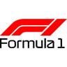

Por vueltas
En Fórmula 1 se fija un número de vueltas y gana quien cruza primero la meta al terminarlas. Si la carrera se alarga demasiado, existe un límite de tiempo.

F1 y WECUna selección de pruebas de Fórmula 1 y del WEC para comparar su campeonato, su país y su duración.
| Prueba | Campeonato | País | Duración |
|---|---|---|---|
| Gran Premio de Mónaco | Fórmula 1 | Mónaco | 78 vueltas |
| Gran Premio de Gran Bretaña | Fórmula 1 | Reino Unido | 52 vueltas |
| Gran Premio de Italia | Fórmula 1 | Italia | 53 vueltas |
| 24 Horas de Le Mans | WEC | Francia | 24 horas |
| 6 Horas de Spa-Francorchamps | WEC | Bélgica | 6 horas |
| 8 Horas de Baréin | WEC | Baréin | 8 horas |
En Fórmula 1 se fija un número de vueltas y gana quien cruza primero la meta al terminarlas. Si la carrera se alarga demasiado, existe un límite de tiempo.
En el WEC la carrera dura un tiempo fijo, como 6 o 24 horas. Cuando se acaba, gana en cada clase el coche que ha completado más vueltas.